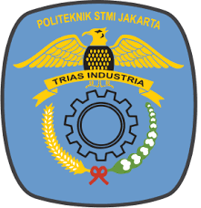
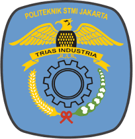

Mahasiswa Baru Teknik Kimia Polimer 2025
Selamat datang adik-adik mahasiswa baru, selamat menempuh jenjang perkuliahan di bidang Teknik Kimia Polimer.
Program Studi Teknik Kimia Polimer
Program studi Teknik Kimia Polimer merupakan program pendidikan yang fokus pada pengembangan kemampuan mahasiswa dalam bidang kimia polimer, sintesis, karakterisasi, dan teknologi pemrosesan polimer. Kurikulum yang diterapkan dirancang untuk memberikan fondasi teoritis yang kuat sekaligus pengalaman praktis yang relevan dengan industri.
Beberapa aspek penting dari program studi ini meliputi:
- Pengantar Industri Otomotif: Memberikan pemahaman dasar tentang industri otomotif dan peran polimer dalam produk-produk otomotif
- Kimia Dasar: Menyediakan fondasi kimia yang diperlukan untuk memahami sifat dan perilaku polimer
- Neraca Massa dan Energi: Mengajarkan prinsip-prinsip dasar perhitungan massa dan energi dalam proses industri
- Termodinamika: Memahami prinsip termodynamika dalam konteks pemrosesan polimer
- Perpindahan Panas: Mengajarkan prinsip transfer panas dalam proses industri
- Kimia Polimer: Fokus pada struktur, sifat, dan reaksi polimer
- Pemrosesan Polimer: Mengajarkan berbagai metode pemrosesan polimer seperti ekstrusi, injeksi, dan blow molding
- Teknologi Karet: Memberikan pemahaman tentang produksi dan karakteristik karet
Kegiatan Sosial dan Komunitas
Di luar aspek akademik, IMTEK sangat menekankan pentingnya pembentukan komunitas yang saling mendukung. Kegiatan sosial seperti bakti sosial, donor darah, dan acara bersama lainnya dirancang untuk membangun rasa kebersamaan dan empati antar mahasiswa.
Komunitas yang kuat ini menjadi tempat bagi mahasiswa untuk:
- Memperluas jaringan sosial dan profesional
- Belajar dari pengalaman teman-teman sebaya
- Mengembangkan keterampilan kerja tim dan kepemimpinan
- Menjadi bagian dari keluarga besar IMTEK
Karier dan Peluang Pengembangan
Lulusan program studi Teknik Kimia Polimer memiliki banyak peluang karier di berbagai sektor industri, termasuk:
- Industri manufaktur polimer dan plastik
- Industri otomotif
- Industri farmasi dan medis
- Industri konstruksi
- Industri pertanian
- Penelitian dan pengembangan
- Entrepreneurship dan startup
IMTEK bekerja sama dengan berbagai perusahaan untuk menyediakan kesempatan magang, kunjungan industri, dan pelatihan kerja. Program ini dirancang untuk mempersiapkan mahasiswa secara langsung untuk dunia kerja.